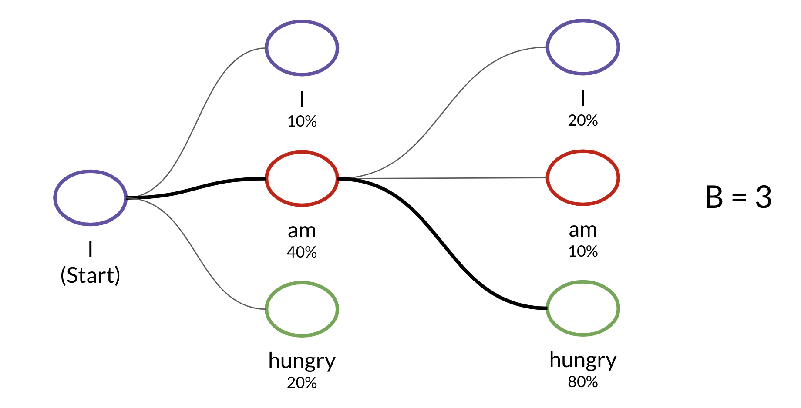

:::{.logo}
:::{.logo}  :::
:::
Natural Language Processing with Attention Models
Notes for: NLP with Attention Models Week 1 ### Week’s Learning Objectives: - Explain how an Encoder/Decoder model works - Apply word alignment for machine translation - Train a Neural Machine Translation model with Attention - Develop intuition for how teacher forcing helps a translation model checks its predictions - Use BLEU score and ROUGE score to evaluate machine-generated text quality - Describe several decoding methods including MBR and Beam search ## TLDR: Neural Network engineering ### How do we learn to align two sequences? Using an tl.attention layer. While it does not reorder the input, attention works by by assigning to each item of the input a subset of the input. ### How do we ustilize arbitrary functions on a Trax Neuarl Net?
Using a functional layers
def Addition(): # this is a a closure
layer_name = "Addition" # the name
# Custom function for the custom layer
def func(x, y):
return x + y
return tl.Fn(layer_name, func) # returning an tl.Fn object with name and functionHow to duplicate or delete input in Trax neural networks?
Simple serial architectures map input to output. When a more complex setup is needed like in the deep imagenets by google this is done using a tl.Select combinator. This is actually something I’ve seen in some papers on image processing papers before residual architectures became more popular - which is also covered in the next item. ~python tl.Select([0,1,0,1])~ which pops items 0,1 from the stack and pushes them in twice. This replicating the inputs on the stack. Now lets suppose a layer gets 3 tensors + the output of anther layer. Which means there will be 4 tensors on the stack. To ignore say the second item we use select. But we also want to consume a layer’s output so we can idicate this using the second parameter which tell the select it has three in coming tensors. ~python tl.Select([0,2],n_in=3)~ ### How to make a residual connections in a Trax Neural Nets? Use the tl.Residual combinator. ~python tl.Residual( tl.The_Layer_To_Bypass() )~ ### How to sample sequence states with noise AKA Temprature Based Sampling ? Use tl.logsoftmax_sample() to create Temprature Based Sampling or Greedy Decoding based on the temprature parameter.
Setting tempature to 0 will return the maximal likelyhood estimate - this is called Greedy Decoding. Larger values will add noise to the distribution allowing sampling of items with lower probabilities. the implementation is like this: ~~~python def logsoftmax_sample(log_probs, temperature=1.0):
“““Returns a sample from a log-softmax output, with temperature. Args: log_probs: Logarithms of probabilities (often coming from LogSofmax) temperature: For scaling before sampling (1.0 = default, 0.0 = pick argmax)”“”
This is equivalent to sampling from a softmax with temperature.
u = np.random.uniform(low=1e-6, high=1.0 - 1e-6, size=log_probs.shape) g = -np.log(-np.log(u)) return np.argmax(log_probs + g * temperature, axis=-1) ~~~ ## Additional coding notes: ### How to use numpy to reshape a test tesnsor so it has a (size 0) batch dimenion at the front? This is needed when inspecting single test inputs instead of working with a batch. The model is expecting to process batches of inputs like it saw during training - we therefore need to add a dimension at the start. ~python padded_with_batch = fastnp.expand_dims(fastnp.array(padded),axis=0)~ ~~~python
get log probabilities from the last token output
log_probs = output[0,-1,:] ~~~ ### How to use calculate Jaccard Similarity which is the intersection over union? ~~~python def jaccard_similarity(candidate, reference): “““Returns the Jaccard similarity between two token lists Args: candidate (list of int): tokenized version of the candidate translation reference (list of int): tokenized version of the reference translation Returns: float: overlap between the two token lists”“”
# convert the lists to a set to get the unique tokens
can_unigram_set, ref_unigram_set = set(candidate), set(reference)
# get the set of tokens common to both candidate and reference
joint_elems = can_unigram_set.intersection(ref_unigram_set)
# get the set of all tokens found in either candidate or reference
all_elems = can_unigram_set.union(ref_unigram_set)
# divide the number of joint elements by the number of all elements
overlap = len(joint_elems) / len(all_elems)
return overlap
# Video 1: Intro
This course is called Natural Language Processing with Attention Models. By the end of the course, we will have reached the cutting edge of today's practical NLP methods. We will use a powerful technique called **attention** to build several different models. Some of the things you build using the attention mechanism, you build a powerful language translation model. You also build an algorithm capable of summarizing texts. You build a model that can actually answer questions about the piece of text, and you build a chat bot that you can actually have a conversation with.
We will also have another look at sentiment analysis.
When it comes to modern deep learning, there's a sort of new normal, which is to say, most people aren't actually building and training models from scratch. Instead, it's more common to download a pre-trained model and then tweak it and find units for your specific use case. In this course, we show you how to build the models from scratch, but we also provide you custom pre-trained models that we created just for you. By training them continuously for weeks on the most powerful TPU clusters that are currently only available to researchers as Google.
# Video 2: Seq2Seq
### Outline:$
- Introduction to Neural Machine Translation
- Seq2Seq model and its shortcomings
- Solution for the information bottleneck
The sequential nature of models you learned in the previous course (RNNs, LSTMs, GRUs) does not allow for speed ups within training examples, which becomes critical at longer sequence lengths, as memory constraints limit batching across examples. (because you can run different batches or examples in parallel or even different directions)

In other words, if you rely on sequences and you need to know the beginning of a text before being able to compute something about the ending of it, then you can not use parallel computing. You would have to wait until the initial computations are complete. This is not good, because if your text is too long, then
1. it will take a long time for you to process it and
2. you will lose a good amount of information mentioned earlier in the text as you approach the end.
## Seq2Seq model
- Introduced by Google in 2014
- Maps variable-length sequences to fixed-length memory
- LSTMs and GRUs are typically used to overcome the vanishing gradient problem

Therefore, attention mechanisms have become critical for sequence modeling in various tasks, allowing modeling of dependencies without caring too much about their distance in the input or output sequences.
in this encoder decoder architecture the yellow block in the middle is the final hidden state produced by the encoder. It is essentials a compressed representation of the sequence in this case the english sentence. The problem with RNN is they tend to have a bias for representing more recent data.
One approach to overcome this issue is to provide the decoder with the attention layer.
# Video 3: Alignment
Alignment is an old problem and there are a number of papers on learning to align and translate which helped put attention mechanism into focus.
- [NEURAL MACHINE TRANSLATION BY JOINTLY LEARNING TO ALIGN AND TRANSLATE](https://arxiv.org/pdf/1409.0473) 2016
- [Jointly Learning to Align and Translate with Transformer Models](https://arxiv.org/abs/1909.02074) 2019
berliner = citizen of berlin
berliner = jelly doughnut
Not all words translate precisely to another word.
Adding an attention layers allows the model to give different words more importance when translating another word.
This is a good task for an attention layer
Developing intuition about alignment:
also check out this page [Deep Learning: The Good, the Bad and the Ugly
](http://phdopen.mimuw.edu.pl/index.php?page=l18w5) in a 2017 talk, Lukasz Kaiser referred to [K,V] as a memory.
We want to manage information better in our model.
We keep the information in a memory consisting of keys and values. (It needs to be differentiable so we can use it with back propagation)
Then we put in the query a sequence and in the keys another sequence (depending on the task they may be the same say for summarization or different for alignment or translation)
By combining Q K using a Softmax we get a vector of probabilities each position in the memory is relevant. weight matrix to apply to the values in the memory.
- get all of the available hidden states ready for the encoder and do the same for the first hidden states of the decoder. (In the example, there are two encoder hidden states, shown by blue dots, and one decoder hidden states.)
- Next, score each of the encoder hidden states by getting its dot product between each encoder state and decoder hidden states.
A higher score means that the hidden state will have more influence on the output.
Then you will run scores through softmax, so each score is transformed to a number between 0 and 1, this gives you your attention distribution.
- Take each encoder hidden state, and multiply it by its softmax score, which is a number between 0 and 1, this results in the alignments vector.
- Add up everything in the alignments vector to arrive at
what's called the context vector.
## W1V4: Attention
The attention mechanism uses encoded representations of both the input or the encoder hidden states and the outputs or the decoder hidden states. The keys and values are pairs. Both of dimension NN, where NN is the input sequence length and comes from the encoder hidden states.
Keys and values have their own respective matrices, but the matrices have the same shape and are often the same. While the queries come from the decoder hidden states. One way you can think of it is as follows. Imagine that you are translating English into German. You can represent the word embeddings in the English language as keys and values. The queries will then be the German equivalent. You can then calculate the dot product between the query and the key. Note that similar vectors have higher dot products and non-similar vectors will have lower dot products. The intuition here is that you want to identify the corresponding words in the queries that are similar to the keys. This would allow your model to "look" or focus on the right place when translating each word.
We then run a softmax:
$$ softmax(QK^T ) $$
That allows us to get a distribution of numbers between 0 and 1.
We then would multiply the output by V. Remember V in this example was the same as our keys, corresponding to the English word embeddings. Hence the equation becomes
$$ softmax(QK^T )V $$
In the matrix, the lighter square shows where the model is actually looking when making the translation of that word. This mapping should not necessarily be one to one. The lighting just tells you to what extent is each word contributing to the input that will be fed into the decoder. As you can see several words can contribute to translating another word, depending on the weights (output) of the softmax that will be used to create the new input.
a picture of attention in translation with English to German An important thing to keep in mind is that the model should be flexible enough to connect each English word with its relevant German word, even if they do not appear in the same position in their respective sentences. In other words, it should be flexible enough to handle differences in grammar and word ordering in different languages.
In a situation like the one I just mentioned, where the grammar of foreign language requires a difference word order than the other, the attention is so flexible enough to find the connection. The first four tokens, the agreements on the, are pretty straightforward, but then the grammatical structure between French and English changes. Now instead of looking at the corresponding fifth token to translate the French word zone, the attention knows to look further down at the eighth token, which corresponds to the English word area, glorious and necessary. It's pretty amazing, was a little matrix multiplication can do.
So attention is a layer of calculations that let your model focus on the most important parts of the sequence for each step. Queries, values, and keys are representations of the encoder and decoder hidden states. And they're used to retrieve information inside the attention layer by calculating the similarity between the decoder queries and the encoder key- value pairs.
## Evaluation metrics for machine translation
### BLEU
- The BLEU score was by Kishore Papineni, et al. In their 2002 paper titled [BLEU: a Method for Automatic Evaluation of Machine Translation][BLEU: a Method for Automatic Evaluation of Machine Translation]
- The closer the BLEU score is to 1, the better a model preforms.
- The closer to 0, the worse it does.
To get the BLEU score, the candidates and the references are usually based on an average of uni, bi, tri or even four-gram precision. For example using uni-grams:

You would sum over the unique n-gram counts in the candidate and divide by the total number of words in the candidate.
The same concept could apply to unigrams, bigrams, etc. One issue with the BLEU score is that it does not take into account semantics, so it does not take into account the order of the n-grams in the sentence.
$$BLEU = BP\Bigl(\prod_{i=1}^{4}precision_i\Bigr)^{(1/4)}$$
with the Brevity Penalty and precision defined as:
$$BP = min\Bigl(1, e^{(1-({ref}/{cand}))}\Bigr)$$
$$precision_i = \frac {\sum_{snt \in{cand}}\sum_{i\in{snt}}min\Bigl(m^{i}_{cand}, m^{i}_{ref}\Bigr)}{w^{i}_{t}}$$
where:
- $m^{i}_{cand}$, is the count of i-gram in candidate matching the reference translation.
- $m^{i}_{ref}$, is the count of i-gram in the reference translation.
- $w^{i}_{t}$, is the total number of i-grams in candidate translation.
## ROUGE
Another similar method for evaluation is the ROUGE score which calculates precision and recall for machine texts by counting the n-gram overlap between the machine texts and a reference text. Here is an example that calculates recall:

$$ Rouge_{recall} = \sum \frac{(\{prediction \space ngrams\} \cap \{ test \space ngrams\})}{\vert{ test \space unigrams}\vert } $$
Rouge also allows you to compute precision as follows:

$$ ROUGE_{precision} = \sum \frac{(\{prediction ngrams\} \cap \{ test ngrams\})}{\vert\{ vocab\}\vert} $$
The ROUGE-N refers to the overlap of N-grams between the actual system and the reference summaries.
Recall and precision can be combined using the [F-score](https://en.wikipedia.org/wiki/F-score) metric.
$$ F_{score}= 2 *\frac{(precision * recall)}{(precision + recall)} $$
# Decoding
## Random sampling
Random sampling for decoding involves drawing a word from the softmax distribution. To explore the latent space it is possible to introduce a temperature variable which controls the randomness of the sample.
~~~python
def logsoftmax_sample(log_probs, temperature=1.0):
"""Returns a sample from a log-softmax output, with temperature.
Args:
log_probs: Logarithms of probabilities (often coming from LogSofmax)
temperature: For scaling before sampling (1.0 = default, 0.0 = pick argmax)
"""
# This is equivalent to sampling from a softmax with temperature.
u = np.random.uniform(low=1e-6, high=1.0 - 1e-6, size=log_probs.shape)
g = -np.log(-np.log(u))
return np.argmax(log_probs + g * temperature, axis=-1)Beam Search
The beam search algorithm is a limited (best-first search). The parameter for the beam width limits the choices considered at each step.  ## Minimum Bayes Risk (MBR) Minimum Bayes Risk (MBR) Compares many samples against one another. To implement MBR: - Generate several random samples. - Compare each sample against all the others and assign a similarity score (e.g. ROUGE). - Select the sample with the highest similarity: the golden one.  ## Summary - Maximal Probability is a baseline - but not a very good one if the data is noisy. - Random sampling with temperature is better. - Beam search uses conditional probabilities and the parameter. - MBR (Minimum Bayes Risk) takes several samples and compares them against each other to find the golden one. note: although not mentioned in the next week’s notes Beam Search can be used to improve the summarization task. MBR may be used to extract a golden summary from a number of samples. ROUGE-N is the preferred metric for evaluating summarization
## Summary - Maximal Probability is a baseline - but not a very good one if the data is noisy. - Random sampling with temperature is better. - Beam search uses conditional probabilities and the parameter. - MBR (Minimum Bayes Risk) takes several samples and compares them against each other to find the golden one. note: although not mentioned in the next week’s notes Beam Search can be used to improve the summarization task. MBR may be used to extract a golden summary from a number of samples. ROUGE-N is the preferred metric for evaluating summarization
References
- BLEU: a Method for Automatic Evaluation of Machine Translation (Kishore Papineni et allm 2002)
- Exploring the Limits of Transfer Learning with a Unified Text-to-Text Transformer (Raffel et al, 2019) - Deep contextualized word representations (Peters et al, 2018)
- The Illustrated Transformer (Alammar, 2018) ::: {.callout-note} add citations for rogue, MBR and Beam search. :::
Reuse
Citation
@online{bochman2021,
author = {Bochman, Oren},
title = {NLP with {Attention} {Models} {Week} 1 {NLP} with {Attention}
{Models}},
date = {2021-03-20},
url = {https://orenbochman.github.io/blog//notes/deeplearning.ai-nlp-c4/2021-03-20-deeplearning.ai-nlp-c4w1-attention-models/2021-03-20-deeplearning.ai-nlp-c4w1-attention-models.html},
langid = {en}
}